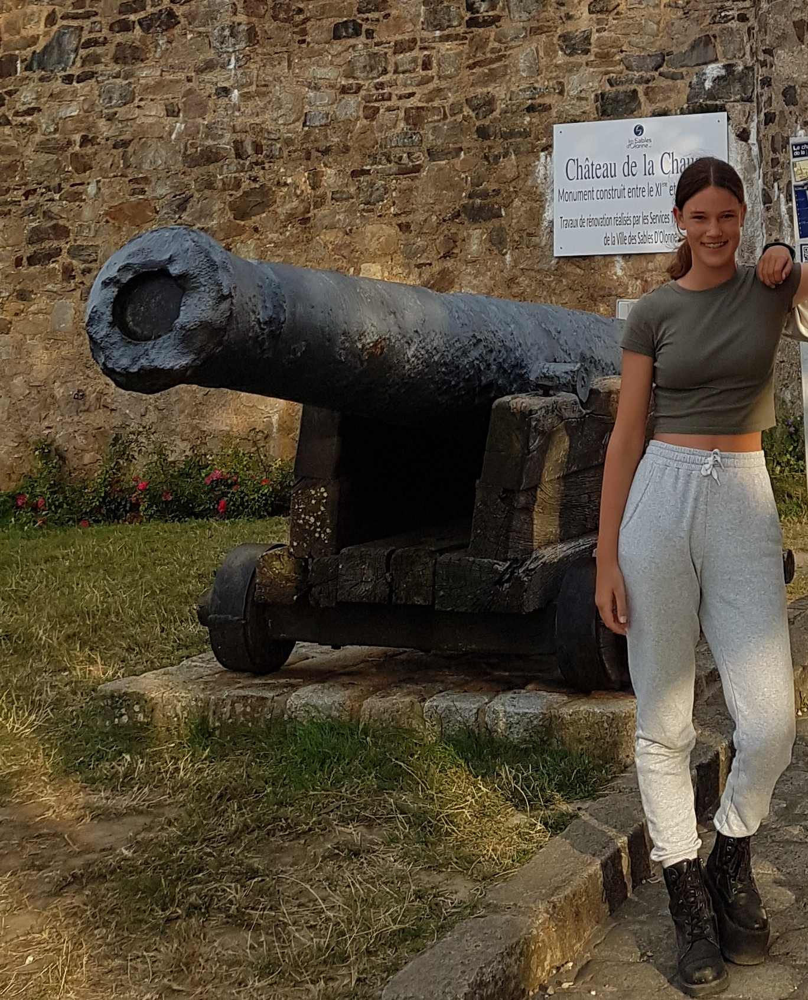

Over mij

Hoi, ik ben Malena. Ik ben 13 jaar oud en heb inmiddels al twee beenverlengingen gehad met het Taylor Spatial
Frame.
Voordat ik geboren was, konden mijn ouders al op de echo zien, dat ik een afwijking in mijn been en voet had.
Mijn
linkerbeen was korter en mijn voet stond scheef.
Nadat ik geboren was, kwamen wij vrij snel bij onze orthopeed
in het
Erasmus MC Sophia kinderziekenhuis terecht, waar geconstateerd werd, dat ik het Femur Fibula & Ulna (FFU)
syndroom heb.
Het FFU syndroom is een zeer zeldzaam syndroom, dat wordt gekenmerkt door afwijkingen in het dijbeen,
kuitbeen en ellepijp.
Mijn kuitbeen is samengegroeid met mijn scheenbeen, waardoor mijn voet scheef staat en mijn onderbeen dunner
is dan
mijn andere been. Mijn knie- en
enkelgewricht zijn
niet goed ontwikkeld en ik mis een kruisband bij mijn knie, waardoor mijn knie instabiel is. Door het FFU
syndroom is de
groei van mijn linkerbeen minder snel, dan het goed ontwikkelde been. Bij mijn geboorte had ik al een
beenlengteverschil
van 6 cm. Als hier niets aan gedaan zou worden, zou als ik uitgegroeid ben het beenlengteverschil 30 cm
bedragen.
Het been kan op drie manieren worden verlengd:
- Externe fixateur
- Taylor Spatial Frame
- Verlengingspin
De externe fixateur wordt gebruikt om het boven- en/of onderbeen te verlengen. Het been kan niet gecorrigeerd
worden.
Met het Taylor Spatial Frame kan het been verlengd en gecorrigeerd worden. Dit frame heb ik zelf twee keer
gehad.
De verlengingspin is een inwendige verlengingspin, waarmee het been verlengd kan worden. Deze pin zal met mijn
derde
beenverlenging gebruikt gaan worden.
Omdat ik de externe fixateur niet zelf heb gehad, zal hier verder niet op in gegaan worden. Mocht je hier wel
meer
informatie over willen dan verwijs ik je naar onderstaande website:
Felicia's beenverlenging
Toen de arts mij vertelde, dat mijn been verlengd ging worden met het Taylor Spatial Frame, kwamen er bij mij en
mijn
ouders veel vragen omhoog. Op internet hebben wij gezocht naar informatie, maar die bleek moeilijk te vinden.
Wij
liepen tegen
vragen aan zoals:
- Welke kleding moet ik straks aan?
- Welke rolstoel heb ik nodig?
- Waar moet ik straks slapen?
- Hoe gaat dat straks op school?
- Wat moet ik allemaal regelen?
- Welke soort fysiotherapeut kan mij straks het beste helpen?
Via deze weg willen wij je graag hierover informeren.